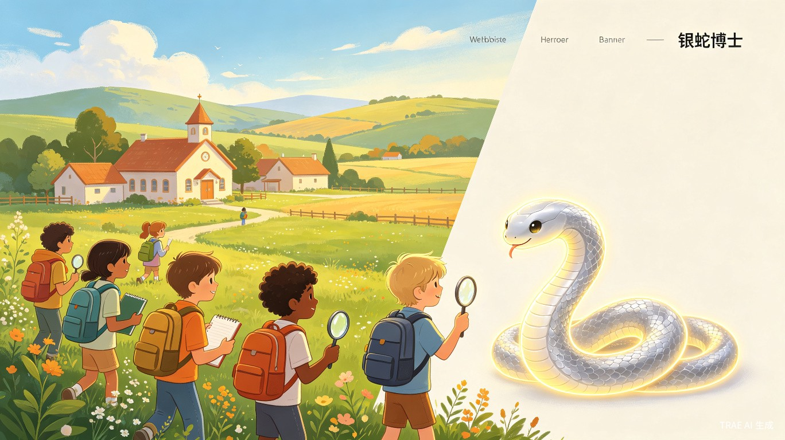
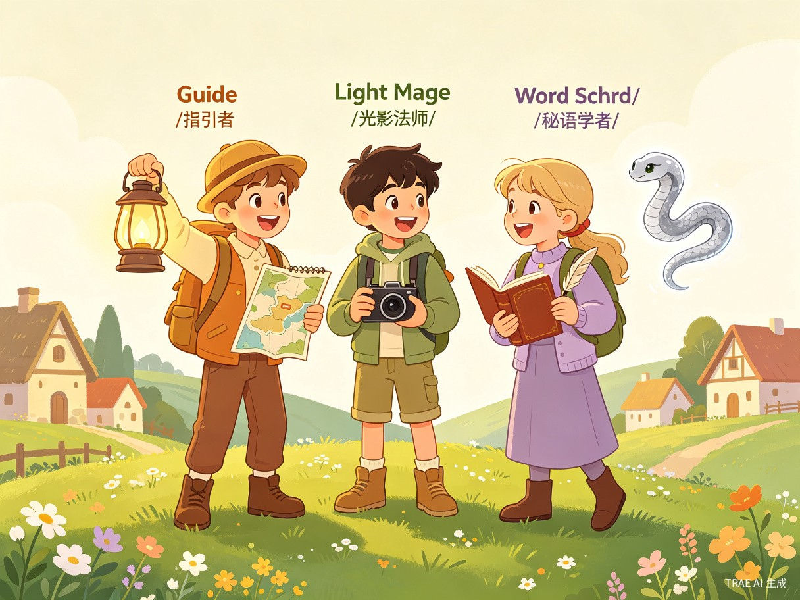
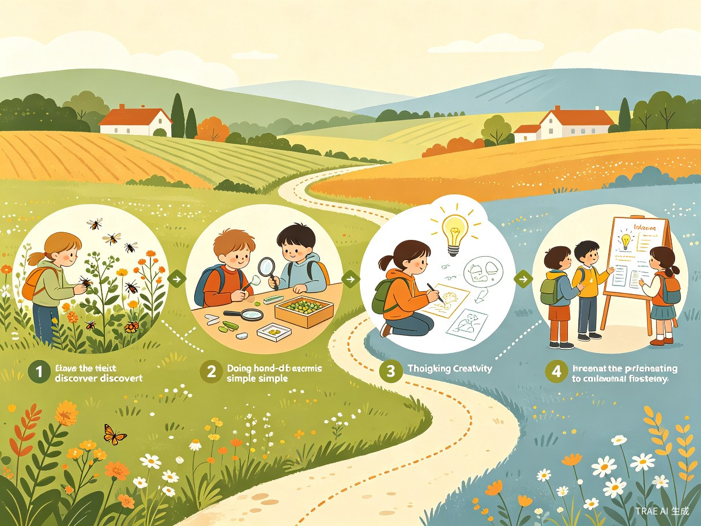
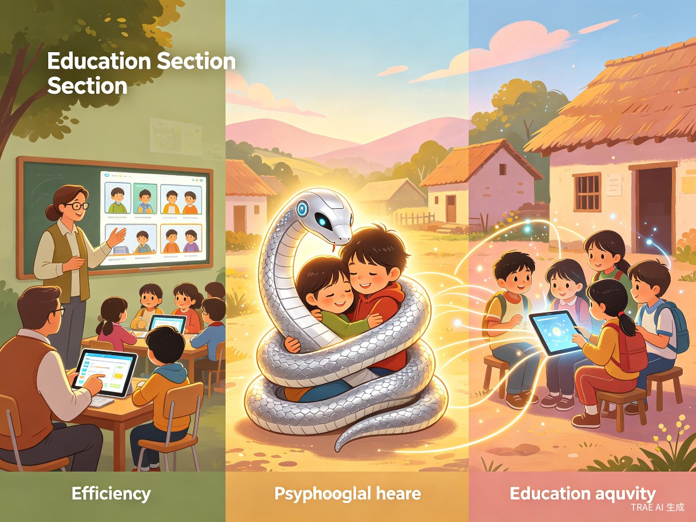

以 AI 智能体「银蛇博士」为核心，陪伴乡村孩子在田野间自主探索、快乐学习
用低门槛的方式，让优质探究式教育走进每一所乡村小学
乡村小学 4-6 年级学生缺少真正适配乡村资源的探究式学习教育资源，学生在传统教学模式下自主学习内驱力不足。我们希望打破"资源鸿沟"，让每一个乡村孩子都能享受到有趣、有效、有温度的学习体验。
我一直有让学习更好玩的想法。之前曾为大学生设计自动化探索城市、博物馆的活动，也曾在乡村尝试做线上的 PBL 项目。AI 时代后，一直想将 AI 功能用于乡村教育，推动学生自主学习——让技术真正服务于每一个需要它的孩子。
一个面向乡村小学的 Web 教育平台（Next.js 全栈应用），以 AI 智能体「银蛇博士」为核心，陪伴孩子以探险小队形式在乡村场景中自主完成不同主题的探究任务。孩子们通过手机即可参与，在完成任务过程中获得银蛇博士的智能指引，用乡村可获取的材料和机构提供的配套物料（放大镜、标本盒等）完成四阶段探究，过程中可语音对话、拍照上传、生成图片视频。
核心用户是乡村小学 4-6 年级学生，同时服务四类辅助角色

以"小队"形式组织，内含三个角色
负责带领小队前进方向，协调任务分工，确保每位队员都参与其中
负责记录与创作，通过拍照、绘画、视频等方式捕捉探究过程中的精彩瞬间
负责整理与表达，将探究发现转化为文字、报告和故事，分享给更多人
两种核心场景，覆盖公益项目导入与乡村老师日常教学
志愿者线上授课 + 小队课后探索。孩子们通过手机登录小队端，在完成任务过程中获得银蛇博士智能体的指引，用乡村可获取的材料和机构提供的配套物料完成四阶段探究。过程中可语音对话、拍照上传、生成图片视频。老师和家长可实时查看学生项目进度与数据，老师参与项目支持与互动。
乡村老师可在"蜡象助手"智能体协助下完成对知识点、教学内容、项目式学习活动的结构化设计，应用于实际教学或活动场景。让每一位乡村老师都能轻松打造属于自己的探究式课堂。
走进与发现 → 动手与实验 → 深入与创新 → 展示与分享。每个阶段都有银蛇博士的全程陪伴与引导，孩子们在真实乡村场景中完成从观察到创造的完整学习闭环。

观察乡村环境，发现探究主题
用乡村材料动手验证猜想
深入思考，提出创新方案
展示成果，分享探究收获
每一个痛点背后，都是一个等待被看见的孩子
乡村小学缺少开展 AI+创新教育的硬件（经济、设备）和软件（人才）。城市孩子触手可及的智能教育工具，对乡村孩子来说遥不可及。
乡村小学老师无法满足学生对个性化学习的需求。一位老师往往要兼顾多个年级、多门课程，难以给予每个孩子足够的关注。
传统教学模式让学习变成任务而非探索，消磨了孩子天然的好奇心和学习动力。孩子们需要的不是更多的作业，而是更有趣的学习方式。
乡村学生中大量留守儿童情感支持缺失，缺少同辈支持。他们不仅需要知识上的帮助，更需要有人倾听、理解和陪伴。
社会价值、运营价值、人文价值三位一体

用低成本、低门槛的方式使乡村孩子拥有一位 24 小时在线、永不疲倦、懂乡村也懂他的 AI 朋友。优质资源不再是门槛，AI+教育不再是城市学生的专利，为乡村学生融入人工智能时代做好能力素养准备。
一位志愿者可同时指导多个小队，一位老师可轻松管理全校。AI 自动查看产出、生成评价及改进建议、分析数据、追踪进度，人力成本降低 80%，覆盖范围扩大 10 倍。让有限的教育资源，覆盖更多需要它的孩子。
银蛇博士内置完整的心理纾解系统，在教学的同时守护每一个孩子的心理健康。识别 6 类负面情绪信号，识别自伤、欺凌等严重信号，给予温暖、专业的情感支持。